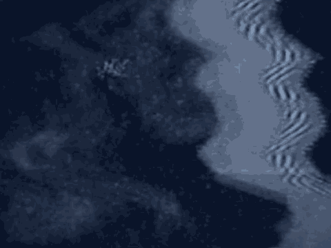
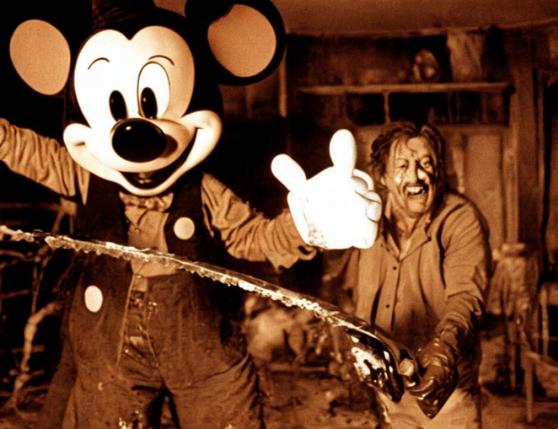

11 Americans from the Gulf, exactly the way al Fadl described it
12 for you. You saw it in a different form. When Khalfan Khamis
13 Mohamed was asked does it occur to you that you were going to
14 kill Tanzanians and not Americans, Khalfan Khamis Mohamed said
15 yes, that's part of the job, but if they're innocent, Allah
16 will take care of them, and if they're not, then they are
17 going to get what they deserve. That's exactly what al Fadl
18 said Abu Hajer told the group. If they are innocent, they
19 will go to paradise. If not, they will get what they deserve.
20 Is this really Islamically correct? I don't know.
21 But is it what Al Qaeda believed? Absolutely. And once they
22 adopt that belief, it makes perfect sense that they would
23 carry out among other things the operation of East Africa in
24 August of 1998.
25 So once Bin Laden and Abu Hajer raise a call to arms
5255
1 with respect to Somalia, Somalia becomes a magnet for Al Qaeda
2 people. Jamal al-Fadl described for you that Abu Hafs the
3 military commander took two trips. The first was for all
4 practical purposes a scouting mission. When he came back from
5 this trip he told Jamal al-Fadl that I went down there, I
6 don't think we can take America head on. This is what Jamal
7 al-Fadl said. He said there are different tribes down there.
8 There is no one in control. But we will start a little bit
9 and if it goes good we'll go bigger.
10 You know, the witness Dr. Samatar described for you
11 the situation in Somalia, that there were many tribes and that
12 they were fighting amongst each other and fighting
13 collectively against other tribes. That is exactly what Abu
14 Hafs recognized when he went there.
15 Ladies and gentlemen, Al Qaeda didn't storm the
16 beaches with an army and we are not submitting to you that Al
17 Qaeda members were the ones that fired the rockets or the
18 bullets or set off the mines. What we are saying to you is
19 that Al Qaeda sent people to Somalia to pursue its goal to
20 drive the Americans out of Somalia. If that meant training
21 people to carry out operations, that's what they would do. If
22 it meant training some who would train others, that's what
23 they would do.
24 At bottom what this reflects is that as far back as
25 1993, Al Qaeda is going to focus wherever America is and do
5256
1 whatever it thinks it can to carry out its mission. Abu Hafs
2 recognized the need and the limitations, but nonetheless, as
3 you will see, Al Qaeda did what it could to drive the
4 Americans out.
5 In fact, Jamal al-Fadl described a second trip that
6 Abu Hafs took, and when he returned from the second trip he
7 said that Al Qaeda was responsible for what happened to the
8 Americans. Again, does that mean he is saying that Al Qaeda
9 members were the ones that fired the guns? Not necessarily.
10 They are responsible, whether or not he is even telling the
11 truth, feel responsible, which tells you a great deal about
12 their mind set.
13 When the call to arms goes out, help comes from
14 everywhere. From Khartoum -- again, we are talking about
15 1993 -- you remember the testimony of Essam al Ridi, the pilot
16 who was called by Wadih El Hage when he was back in Texas to
17 see about buying a plane for Bin Laden. One of the things
18 that El Hage asked Essam al Ridi was if a plane would have
19 enough range to go from Pakistan to Sudan because he wanted to
20 know if Essam al Ridi would help deliver Stinger missiles from
21 Pakistan to Sudan, at precisely the same time that American
22 forces are in Somalia.
23 The other thing that Essam al Ridi told you was after
24 he bought the plane and brought it to Khartoum, Wadih El Hage
25 asked him to fly five members of Al Qaeda from Khartoum to
1